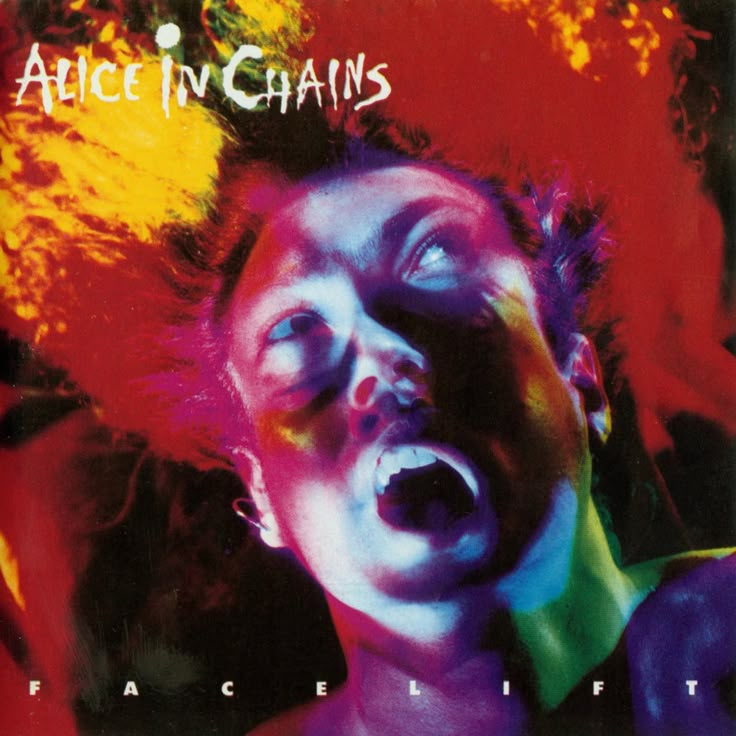
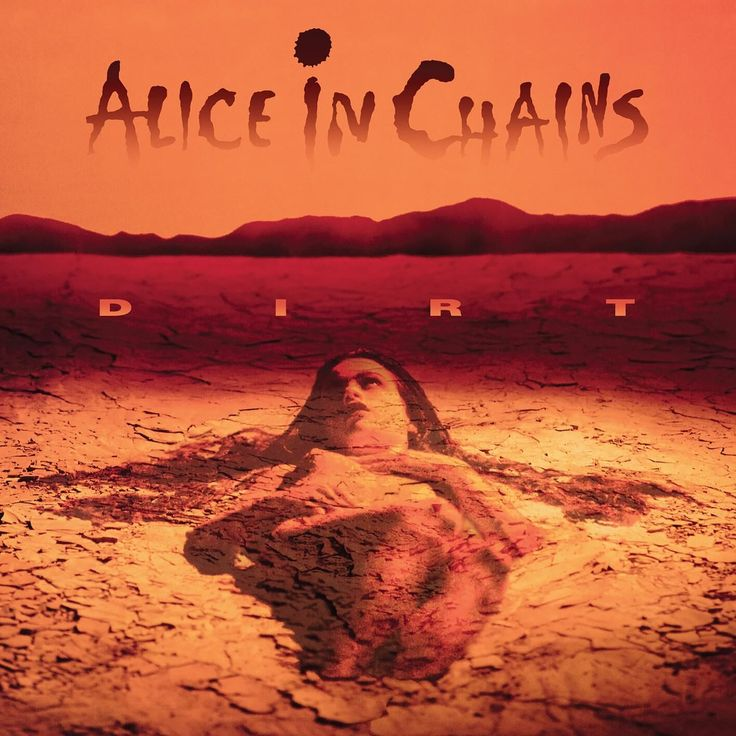
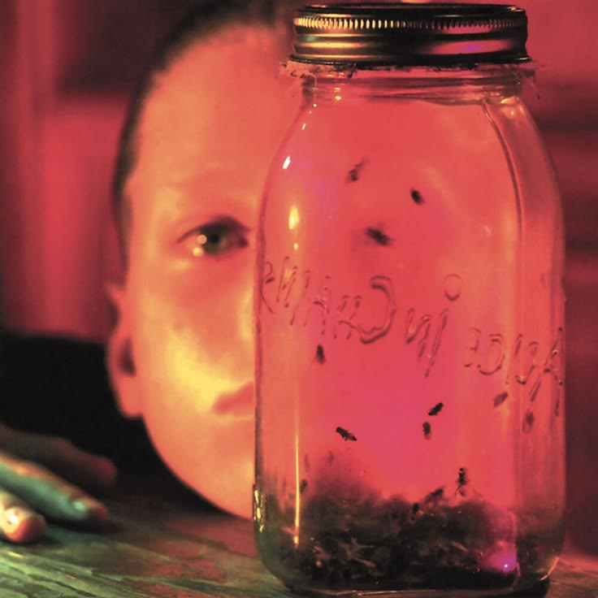
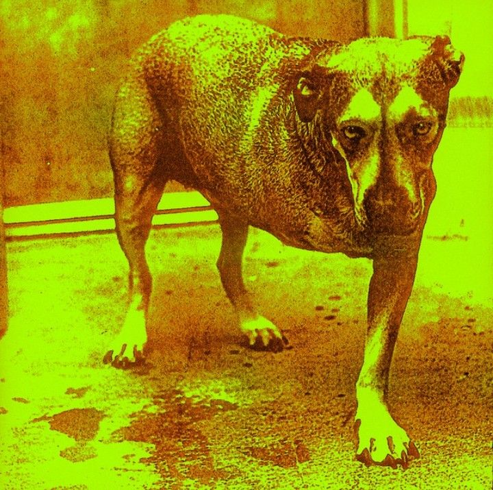
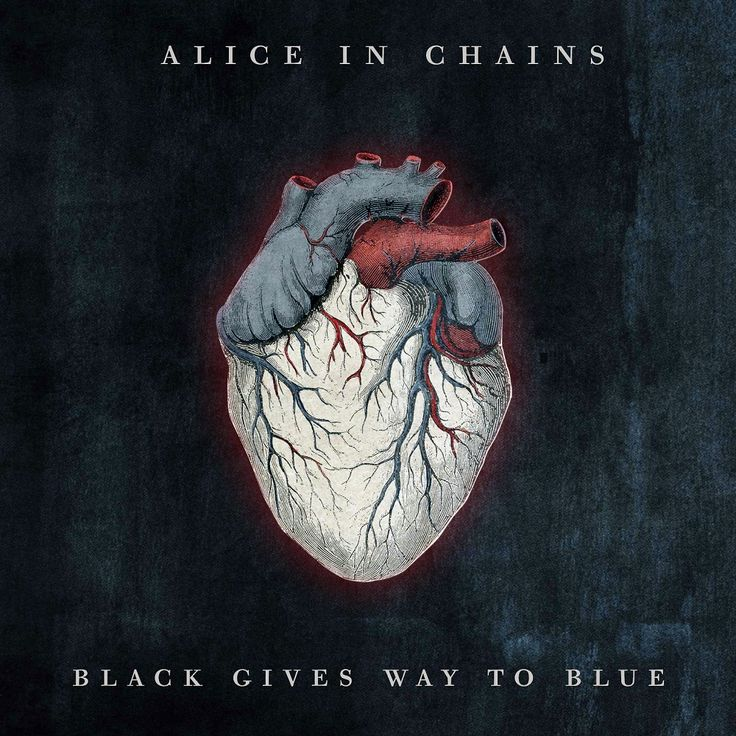
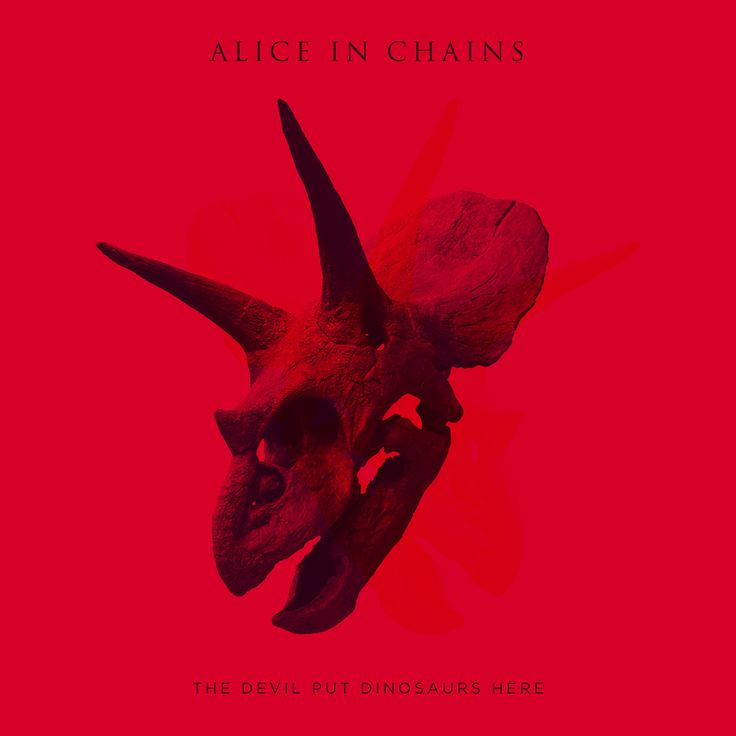
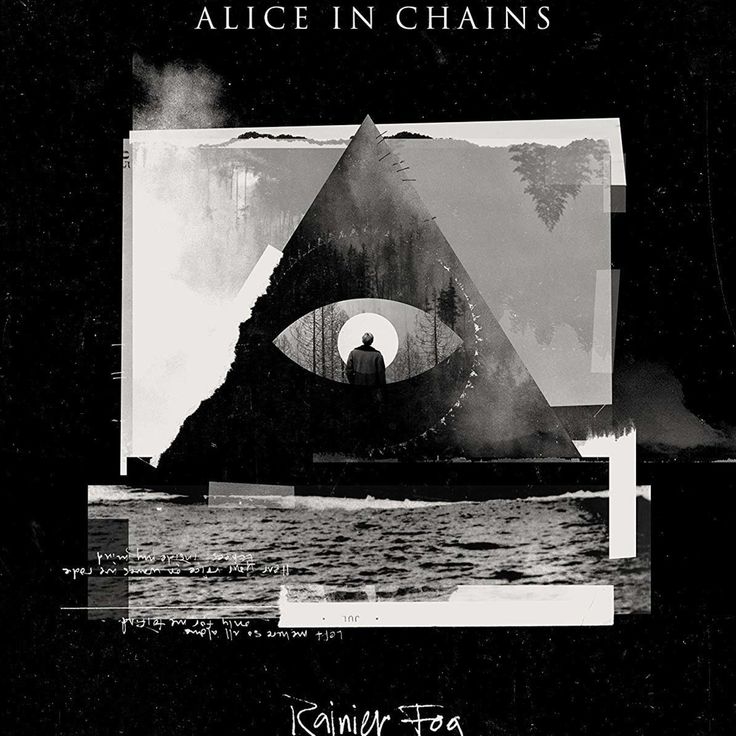

O Início e a Era Layne Staley
Formada em 1987 por Jerry Cantrell e Layne Staley, a banda se destacou pelo som pesado e as harmonias vocais únicas. Diferente de outras bandas de Seattle, o AIC trazia uma influência forte do Heavy Metal.
A essência melancólica e poderosa do Grunge de Seattle
Formada em 1987 por Jerry Cantrell e Layne Staley, a banda se destacou pelo som pesado e as harmonias vocais únicas. Diferente de outras bandas de Seattle, o AIC trazia uma influência forte do Heavy Metal.
Após a trágica morte de Staley em 2002, a banda retornou anos depois, provando sua resiliência e mantendo seu legado vivo com novos álbuns aclamados pela crítica.

Facelift

Dirt

Jar of Flies

Alice In Chains

Black Gives Way to Blue

The Devil Put Dinosaurs Here

Rainier Fog
Nota: VERIFIQUE O VOLUME DO DISPOSITIVO